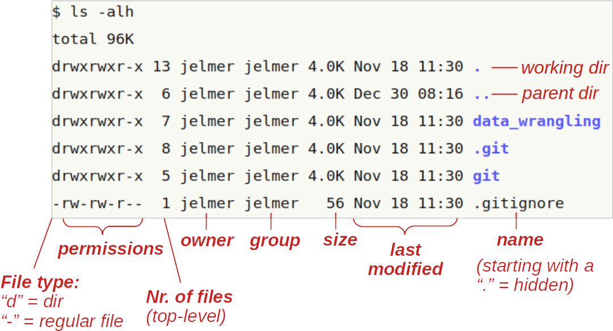

dateMon Aug 21 11:59:41 EDT 2023Many of the things you typically do by pointing and clicking can alternatively be done by typing commands. The Unix shell allows you to interact with computers via commands. It is natively available through a Terminal app in computers with Unix-like operating systems like Linux (on which OSC runs) or MacOS, and can also be installed on Windows computers with relatively little trouble these days (see the SSH reference page on this website).
Working effectively on a remote supercomputer tends to simply require using a command line interface. But there are more advantages to doing command line computing than just allowing you to work on a supercomputer, such as:
In these sessions, we’ll use a Unix shell at OSC inside VS Code1. For this session, specifically, I will assume you still have an active VS Code session as setup in the previous one, have VS Code located at /fs/ess/PAS0471, and with an open Terminal — if not, see the instructions in the dropdown box right below.
Interactive Apps and then near the bottom of the dropdown menu, click Code Server.PAS0471)/fs/ess/PAS0471 as the starting directoryNumber of hours is at least 2Launch.Runnning, click Connect to VS Code.

Terminal => New Terminal. (Or use one of the keyboard shortcuts: Ctrl+` (backtick) or Ctrl+Shift+C.)pwd to check where you are. If you are not in /fs/ess/PAS0471, click Open folder... in the Welcome tab, or => File => Open Folder, then type/select /fs/ess/PAS0471 and press Ok.We’re going to focus on the practice of doing command line computing here, and not get too bogged down in terminology, but let’s highlight a few interrelated terms you’re likely to run across:
While it might not fly for a computer science class, for day-to-day computing/bioinformatics, you’ll probably hear all these terms used somewhat interchangably. Basically, we’re talking about the process of interacting with your computer by giving it commands as opposed to the point-and-click way you’re likely more familiar with.
Inside your terminal, the “prompt” indicates that the shell is ready for a command. What is shown exactly varies a bit across shells and can also be customized, but our prompts at OSC should show the following:
[<username>@<node-name> <working-dir>]$For example:
[jelmer@p0080 PAS0471]$ We type our commands after the dollar sign, and then press Enter to execute the command. When the command has finished executing, we’ll get our prompt back and can type a new command.
The pale gray boxes like the ones shown above will be used to represent your command prompt, or rather, to show the command line expressions that you will type.
In upcoming boxes, the prompt itself ([...]$) will not be shown, but only the command line expressions that you type. This is to save space and also because if we omit the prompt, you will be able to directly copy and paste commands from the website to your shell.
Also, in a notation like <username>, the < > are there to indicate this is not an actual, functional example, but a descriptive generalization, and should not be part of the final code. In this case, then, it should be replaced merely by a username (e.g. jelmer), and not by <jelmer>, as you can see in the example with the prompt above.
date, whoami, pwdThe Unix shell comes with hundreds of commands. Let’s start with a few simple ones.
The date command prints the current date and time:
dateMon Aug 21 11:59:41 EDT 2023When you hover your mouse above the top box with the command (sometime you have to click in it first), you should see a copy icon appear on the far right, which will copy the command to your clipboard: for longer expressions, this can be handy so you can paste this right into your shell and don’t have to type. Generally speaking, though, learning works better when you type the commands yourself!
Also, the darker gray box below, with italic text, is intended to show the output of commands as they are printed to the screen in the shell.
The whoami (who-am-i) command prints your username:
whoamijelmerThe pwd (Print Working Directory) commands prints the path to the directory you are currently located in:
pwd/fs/ess/PAS0471All 3 commands that we just used provided us with some output. That output was printed to screen, which is the default behavior for nearly every Unix command.
On Unix systems, all the files on a computer exist within a single hierarchical system of directories (folders). When working in the Unix shell, you are always “in” one of these directories. The directory you’re “in” at any given time is referred to as your working directory.
In a path (specification of a file or directory location) such as that output by pwd, directories are separated by forward slashes /.
A leading forward slash in a path indicates the root directory of the computer, and as such, the path provided by pwd is an absolute path (or: full path), and not a relative path — more on that later.
While not shown in the cd output, if you happen to see a trailing forward slash in a path (eg. /fs/ess/PAS0471/), you can be sure that the path points to a directory and not a file.
cd and command actions, defaults, and argumentsIn the above three command line expressions:
But many commands perform an action other than printing output. For example, the very commonly used command cd (Change Directory) will, you guessed it, change your working directory. And as it happens, it normally has no output at all.
We start by simply typing cd:
[jelmer@p0080 PAS0471]$ cd
[jelmer@p0080 ~]$Did anything happen? You might expect a command like cd to report what it did, but it does not. As a general rule for Unix commands that perform actions, and one that also applies to cd: if the command does not print any output, this means it was successful.
So where did we change our working directory to, given that we did not tell cd where to move? Our prompt (as shown in the code box below) actually did give us a clue: PAS0471 was changed to ~ But what does ~ mean?
pwd/users/PAS0471/jelmerIt appears that we moved to our Home directory! (Remember, we were in the Project directory /fs/ess/PAS0471.)
And as it turns out, ~ is a shell shortcut to indicate your Home directory — more on that later.
From this, we can infer that the default behavior of cd, i.e. when it is not given any additional information, is to move to a user’s home directory. This is actually a nice trick to remember!
Now, let’s move to another directory, one that contains some files we can explore to learn our next few commands. We can do so by specifying the path to that directory after the cd command (make sure to leave a space after cd!):
cd /fs/ess/PAS0471/demo/202307_rnaseq/pwd/fs/ess/PAS0471/demo/202307_rnaseqIn more abstract terms, what we did above was to provide cd with an argument (namely, the path to the dir to move to). Arguments generally tell commands what file or directory to operate on, and come at the end of a command line expression. There should always be a space between the command and its argument(s)!
After typing /fs/e, press the Tab key!
/fs/ess/After typing /fs/ess/P, press the Tab key. Nothing will happen, so now press it quickly twice in succession.
Display all 709 possibilities? (y or n)Type n. Why does this happen?
After typing /fs/ess/PAS04, press the Tab key twice quickly in succession (“Tab-tab”).
PAS0400/ PAS0409/ PAS0418/ PAS0439/ PAS0453/ PAS0456/ PAS0457/ PAS0460/ PAS0471/ PAS0472/ PAS0498/ After typing /fs/ess/PAS0471/demo/2, press the Tab key!
/fs/ess/PAS0471/demo/202307_rnaseq/The tab completion feature will check for files/dirs present in the location you’re at, and based on the characters you’ve typed so for, complete the path as far as it can.
Sometimes it can’t move forward at all because there are multiple files or dirs that have the same next character. Pressing “Tab-tab” will then show your options, though in unusual circumstances like one above, there are so many that it asks for confirmation. In such cases, it’s usually better to just keep typing assuming that you know where you want to go.
In general, though, Tab completion is an incredibly useful feature that you should try to get accustomed to using right away!
As we’ve seen, then, cd gives no output when it succesfully changed the working directory (“silence is golden”!). But let’s also see what happens when it does not succeed — it gives the following error:
cd /fs/Ess/PAS0471bash: cd: /fs/Ess/PAS0471: No such file or directoryWe used a capital E in /Ess/ — this should have been /ess/.
In summary, in this section we’ve learned that:
cd command can be used to change your working directorycd that perform actions will by default only print output to screen when something goes wrong (i.e., errors)cd arguments to tell them what to do / operate on.Next, we’ll learn about options to commands in the context of the ls command.
ls and command optionslsThe ls command, short for “list”, is a quite flexible command to list files and directories:
lsdata metadata README.md(You should still be in /fs/ess/PAS0471/demo/202307_rnaseq. If not, cd there first.)
ls output colors
Unfortunately, the ls output shown above does not show the different colors you should see in your shell — here are some of the most common ones:
data and metadata above)README.md above)The default behavior of ls includes that it will:
All of this, and more, can be changed by providing ls with options and/or arguments.
Let’s start with an argument, since we’re familiar with those in the context of cd. Any argument to ls should be a path to operate on. For example, if we wanted to see what’s inside that mysterious data dir, we could type:
ls datafastqWell, that’s not much information, just another dir — so let’s look inside that:
ls data/fastq # These will be shown in red in your output, since they are compressedASPC1_A178V_R1.fastq.gz ASPC1_G31V_R2.fastq.gz Miapaca2_G31V_R1.fastq.gz
ASPC1_A178V_R2.fastq.gz Miapaca2_A178V_R1.fastq.gz Miapaca2_G31V_R2.fastq.gz
ASPC1_G31V_R1.fastq.gz Miapaca2_A178V_R2.fastq.gzAh, there are some gzipped FASTQ files! These contain our sequence data, and we’ll go and explore them in a bit.
We can also provide ls with multiple arguments — and it will nicely tell us which files are in each of the dirs we specified:
ls data metadatadata:
fastq
metadata:
meta.tsvMany Unix commands will accept multiple arguments (files or dirs to operate on), which can be very useful.
Finally, we’ll turn to options. Whereas, in general, arguments tell a command what to operate on, options (also called “flags”) will modify its behavior.
For example, we can call ls with the option -l (a dash followed by a lowercase L):
ls -l total 17
drwxr-xr-x 3 jelmer PAS0471 4096 Jul 27 11:53 data
drwxr-xr-x 2 jelmer PAS0471 4096 Jul 27 11:54 metadata
-rw-r--r-- 1 jelmer PAS0471 963 Jul 27 16:48 README.mdNotice that it lists the same three items as our first ls call above, but now, they’re printed in a different format: one item per line, with lots of additional information included. For example, the date and time is that when the file was last modified, and the numbers just to the left of that (e.g., 4096) show the file sizes in bytes2.
Let’s add another option, -h — before reading on, can you pick out what it did to modify the output?
ls -l -htotal 17K
drwxr-xr-x 3 jelmer PAS0471 4.0K Jul 27 11:53 data
drwxr-xr-x 2 jelmer PAS0471 4.0K Jul 27 11:54 metadata
-rw-r--r-- 1 jelmer PAS0471 964 Jul 27 17:48 README.mdNote the difference in the format of the column reporting the sizes of the items listed — we now have “human-readable filesizes”, where sizes on the scale of kilobytes will be shown in Ks, of megabytes in Ms, and of gigabytes in Gs.
Many options have a “long option” counterpart, i.e. a more verbose way of specifying the option. For example, -h can also be specified as --human-readable:
ls -l --human-readable # Output not shown, same as above(And then there are also options that are only available in long format — even with case-sensitivity, one runs out of single-letter abbreviations at some point!)
Despite that short options like the -l and -s we’ve seen (single-dash, single-letter) are very terse and may at times seem impossible to remember, they are still often preferred with common Unix commands, because they are shorter to type — and keep in mind that you might use, say, ls -lh dozens if not hundreds of time a day if you work in the Unix shell a lot.
A very useful feature of “short options” is that they can be pasted together as follows:
ls -lh # Output not shown, same as abovels
The figure below shows what information is shown in each of the columns (but note that it shows a different listing of files, and uses the new-to-us -a option, short for “all”, to also show “hidden files”):

Finally, we can combine options and arguments, and let’s do so take a closer look at our dir with FASTQ files — now the -h option is especially useful because it makes it easy to see that the files vary between 4.1 MB and 5.3 MB in size:
ls -lh data/fastqtotal 38M
-rw-r--r-- 1 jelmer PAS0471 4.1M Jul 27 11:53 ASPC1_A178V_R1.fastq.gz
-rw-r--r-- 1 jelmer PAS0471 4.2M Jul 27 11:53 ASPC1_A178V_R2.fastq.gz
-rw-r--r-- 1 jelmer PAS0471 4.1M Jul 27 11:53 ASPC1_G31V_R1.fastq.gz
-rw-r--r-- 1 jelmer PAS0471 4.3M Jul 27 11:53 ASPC1_G31V_R2.fastq.gz
-rw-r--r-- 1 jelmer PAS0471 5.1M Jul 27 11:53 Miapaca2_A178V_R1.fastq.gz
-rw-r--r-- 1 jelmer PAS0471 5.3M Jul 27 11:53 Miapaca2_A178V_R2.fastq.gz
-rw-r--r-- 1 jelmer PAS0471 5.1M Jul 27 11:53 Miapaca2_G31V_R1.fastq.gz
-rw-r--r-- 1 jelmer PAS0471 5.3M Jul 27 11:53 Miapaca2_G31V_R2.fastq.gz(Beginners are often inclined to move to a directory when they just want to ls its contents, but its often more convenient to stay put and use an argument to ls instead, like we did above.)
ls, arguments, and optionsIn summary, in this section we have learned that:
The ls command lists files (by default without additional info and non-recursively)
Using arguments, we tell ls (and other commands) what to operate on. Arguments come at the end of the command line epxression, and are not preceded by a dash or any other “pointer”. They are typically names of files or dirs, but can be other things too.
Using options, we can make ls (and other commands) show us the results in different ways. They are preceded by at least one dash (-, like -l).
The options we’ve seen so far act as “on/off switches”, and this is very common among Unix commands.
But some options are not on/off switches and accept values (confusingly, these values can also be called “arguments” to options). For example, the --color option to ls determines how it colorizes its output: there is ls --color=never — versus, among other possibilities, ls --color=always.
We’ll see a lot of options that take values when running bioinformatics programs, such as to set specific analysis parameters — for example: trim_galore --quality 30 --length 50 would set a minimum Phred quality score threshold of 30 and a minimum read length threshold of 50 bases for the program TrimGalore, which we will later use to quality-trim and adapter-trim FASTQ files. (This --<option> <value> syntax, i.e. without an = is more common than the --<option>=<value> syntax shown for ls above.)
In contrast to when you are using common Unix commands, I would recommend to mostly use long options whenever available when running bioinformatics programs like TrimGalore. That way, it’s easier for you to remember what you did with that option, and more likely to be immediately understood by anyone else reading the code (cf. trim_galore -q 30 -l 50 and trim_galore --quality 30 --length 50).
tree command and recursive ls (Click to expand)
The tree command lists files recursively (i.e., it will also show us what’s contained in the directories in our working directory), and does so in a tree-like fashion — this can be great to quickly get an intuitive overview of files in a dir:
tree -C # The -C option will colorize the output

As an aside: if we want to make ls list files recursively, we can use the -R option:
ls -R.:
data metadata README.md
./data:
fastq
./data/fastq:
ASPC1_A178V_R1.fastq.gz ASPC1_G31V_R2.fastq.gz Miapaca2_G31V_R1.fastq.gz
ASPC1_A178V_R2.fastq.gz Miapaca2_A178V_R1.fastq.gz Miapaca2_G31V_R2.fastq.gz
ASPC1_G31V_R1.fastq.gz Miapaca2_A178V_R2.fastq.gz
./metadata:
meta.tsvAs we’ve mentioned, “paths” are specifications of a location on a computer, either of a file or a directory.
We’ve talked about the commands cd and ls that operate on paths, and without going into much detail about it so far, we’ve already seen two distinct ways of specifying paths:
Absolute (full) paths always start from the root directory of the computer, which is represented by a leading /, such as in /fs/scratch/PAS0471/.
(Absolute paths are like GPS coordinates to specify a geographic location on earth: they will provide location information regardless of where we are ourselves.)
Relative paths start from your current location (working directory). When we typed ls data earlier, we indicated that we wanted to show the contents of the data directory located inside our current working directory — that probably seemed intuitive. But be aware that the shell would look absolutely nowhere else for that dir than in our current working directory.
(Relative paths are more like directions to a location that say things like “turn left” — these instructions depend on our current location.)
Absolute paths may seem preferable because they will work regardless of where you are located, but:
Say that Lucie has a directory for a research project, /fs/ess/PAS0471/lucie/rnaseq1, with lots of dirs and files contained in it. In all her code, she specify paths relative to that top-level project directory.
Then, she share that entire directory with someone else, copying it off OSC. If her collaborator goes wherever they now have that directory stored, e.g. /home/philip/lucie_collab/rnaseq1, and then start using Lucie’s code with relative paths, they would still work.
Similarly, if Lucie moves her dir to /fs/scratch/PAS0805/lucie/rnaseq1, all her code with relative paths would still work as well.
There are a couple of “shortcuts” available for relative paths. First of all, . (a single period) is another way of representing the current working directory. Therefore, for instance, ls ./data is functionally the same as ls data, and just a more explicit way of saying that the data dir is located in your current working dir (this syntax is occasionally helpful).
More usefully for our purposes here, .. (two periods) means one level up in the directory hierarchy, with “up” meaning towards the root directory (I guess the directory tree is best visualized upside down!):
ls .. # One level up, listing /fs/ess/PAS0471/demo202307_rnaseqThis pattern can be continued all the way to the root of the computer, so ../.. would list files two levels up:
ls ../.. # Two levels up, listing /fs/ess/PAS0471aarevalo conroy frederico Nisha osu8947 ross
acl containers hsiangyin osu10028 osu9207 Saranga
Almond_Genome danraywill jelmer osu10436 osu9207_Lubell_bkup Shonna
amine1 data jelmer_osu5685 osu5685 osu9390 SLocke
ap_soumya demo jlhartman osu6702 osu9453 sochina
audreyduff dhanashree linda osu8107 osu9657
bahodge11 edwin Maggie osu8468 pipeline
calconey ferdinand mcic-scripts osu8548 poonam
camila Fiama Menuka osu8618 raees
Cecilia Flye nghi osu8900 rawalranjana44Along these lines, there are two other shortcuts worth mentioning:
~ represents your Home directory, so cd ~ would move there and ls ~ would list the files there
- is a cd-specific shortcut that it is like the “back” button in your browser: it will go to your previous location. (But it only has a memory of 1, so subsequent cd -s would simply move you back and forth between two directories.)
Except for -, all of the above shortcuts are general shell shortcuts that work with any command that takes a path.
We’ve learned about structure of command line expressions in the Unix shell, which include: the command itself, options, arguments, and output (including, in some cases, error messages).
A few key general points to remember are that:
Commands whose main function is to provide information (think ls, date, pwd) will print their output to the screen. We’ll learn later how we can “redirect” output to a file or to another command!
Using options (ls -l), we can modify the behavior of a command, and using arguments (ls data), we can modify what it operates on in the first place.
One additional, important thing to realize about the structure of command line expressions is this:
Everything you type on the command line should start with the name of a command, or equivalently, a program or script (these are all just “programs”).
Therefore, for example, just typing the name of a file, even if it exists in your current working directory, will return an error. (I.e., it won’t do anything with that file, such as printing its contents, like you had perhaps expected.) This is because the first word of a command line expressio should be a command, and the name of a file is (usually!) not a command:
README.mdREADME.md: command not foundIn many ways, as mentioned in the box above, you can think of using a command-line bioinformatics program as using just another command.
Therefore, our general skills with Unix commands will very much extend to using command-line bioinformatics tools!
We’ve learned to work with the following truly ubiquitous Unix commands:
pwd — print your current working directorycd — change your working directoryls — list files and dirsAnd we have seen a few other simpler utility commands as well (date, whoami, and tree in a dropdown box).
We’ll continue with the basics of the Unix shell in part II.
We saw several different options for the ls command, and that may have left you wondering how you are supposed to know about them.
--help optionMany (but not all!) commands have a --help option which will primarily describe the command’s function and “syntax” including many of the available options.
For a very brief example, try:
whoami --helpFor a much longer example, try:
ls --helpman commandThe man command provides manual pages for Unix commands, which is more complete than the --help help, but sometimes overwhelming as well as terse and not always easy to fully understand — Google is your friend as well!
For a short example, try:
man pwdFor a much longer example, try:
man lsBut just for reference, there are other ways of accessing a Unix shell at OSC: for example, you can also get Shell access through the “Clusters” menu in OSC OnDemand, or you could connect your local Unix shell to OSC through SSH (again, see this reference page).↩︎
Though these sizes are only directly useful for files, not dirs! You can also ignore the total 17 line at the top.↩︎
We’ll see later on how we can make commands more “verbose” than they are by default, which can certainly be useful.↩︎